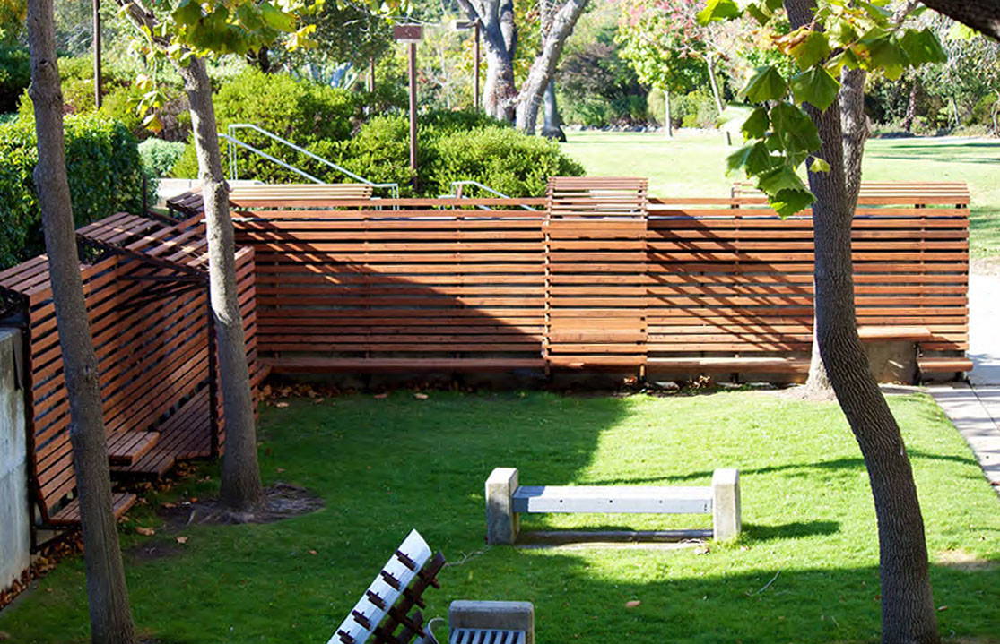
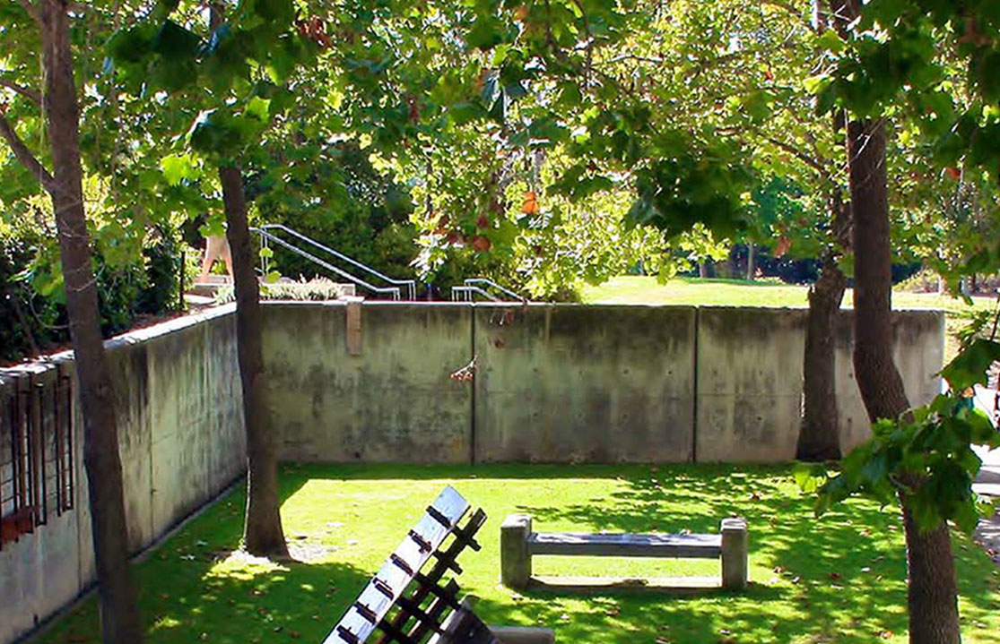
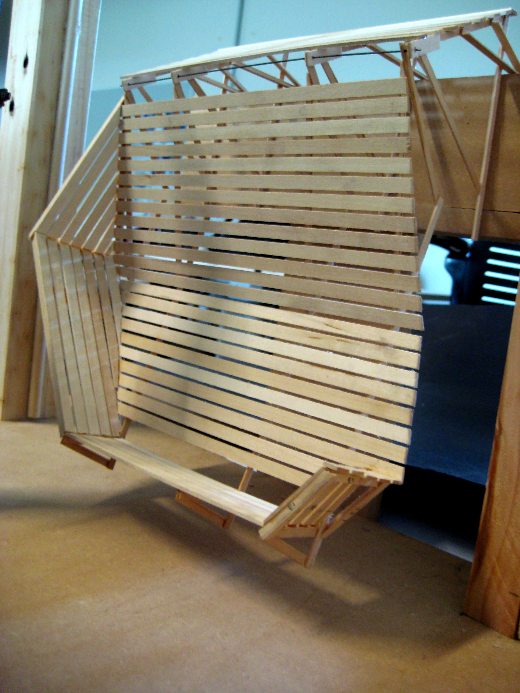
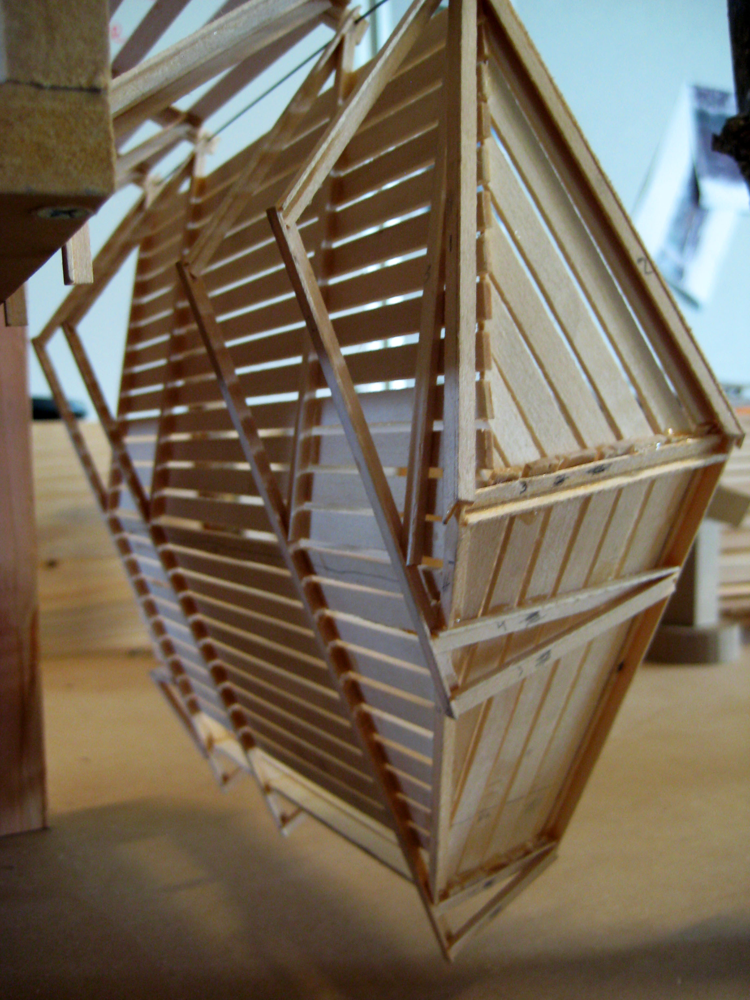
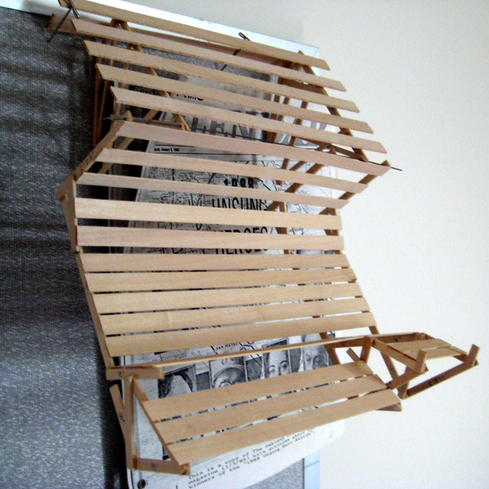
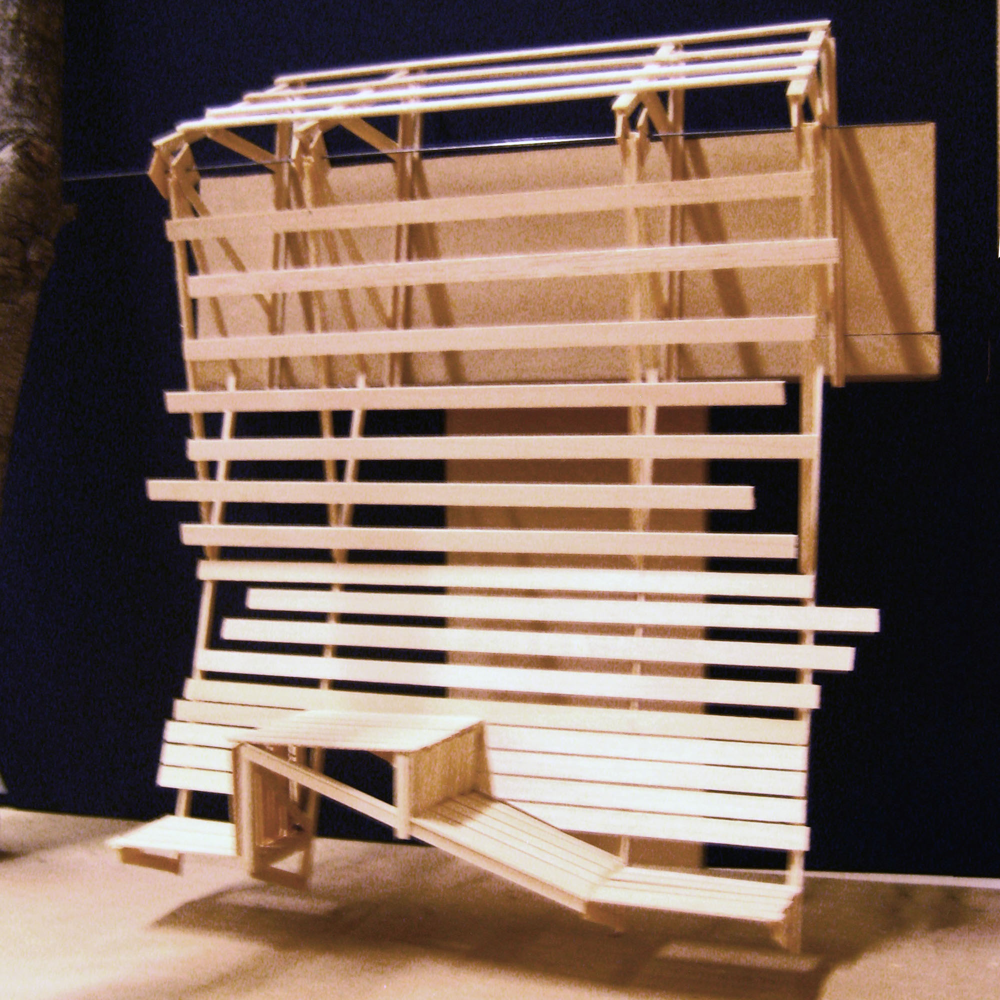
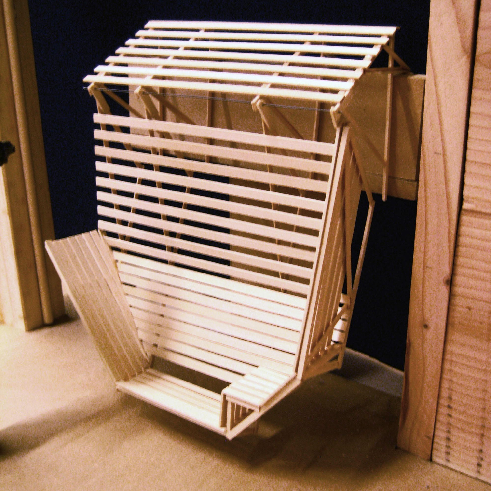
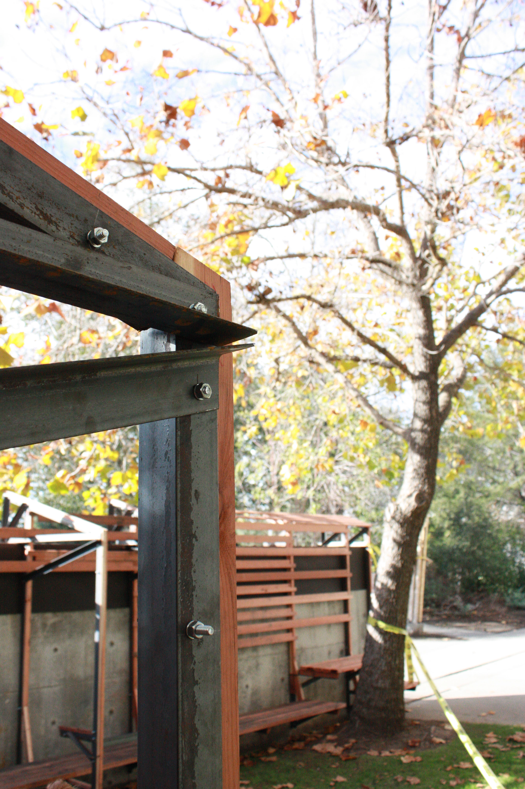
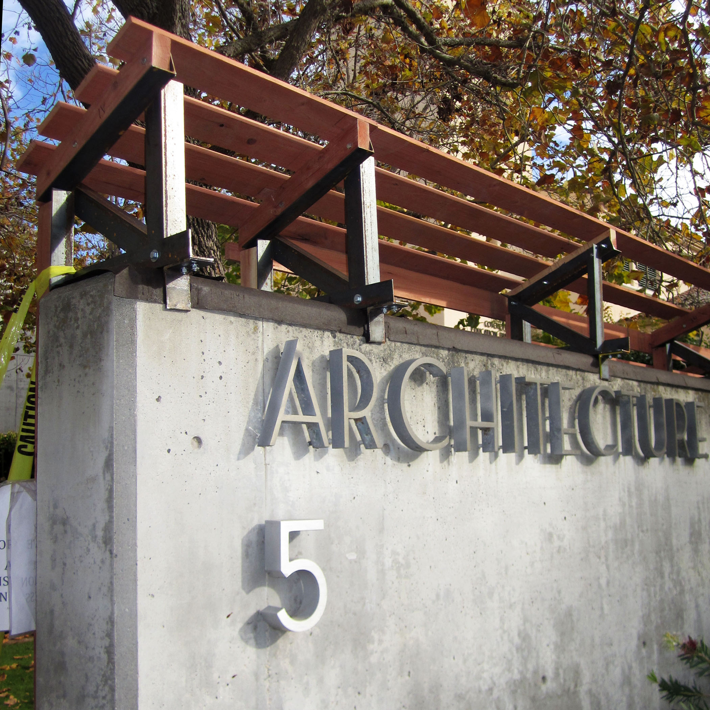
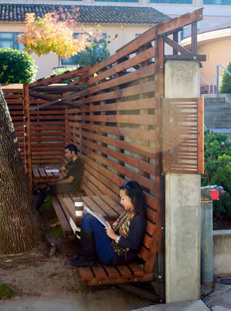

the basics.
What: Design-build studio project
Who: In collaboration with Studio Consilio, under the direction of Jonathan Reich
Where: Cal Poly architecture building courtyard
the design challenge.
Design and build a courtyard addition that will serve the students.
about.
Studio Consilio's Hanging Bench project was designed and built in ten weeks, and was designed to catalyze social interaction in a space that was previously overlooked and underutilized. It is a versatile space designed for activities ranging from sleeping to socializing to holding class meetings. As its name suggests, this project hangs from the top of the concrete wall instead of being affixed to the wall, relying on a structural system of 2" and 3" angle iron. Big Creek Lumber Company donated the 1x4 and 2x4 redwood slats. Most of my efforts went into the development of the swing, which is not yet installed due to complications with the concrete support wall. The swing embodies the same character and functionality as the rest of the project with the added perk (and design challenge) of movement.
the process.

We built many models to help develop the swing design. This is the fully-functional model of the final swing design, built from basswood of the same proportions as the angle iron and redwood slats.

We designed a refined structural system that supported the project's ribbon aestetic as well as the swing's placement and movement.



These 3 images show a series of iterations of the swing design. Besides manipulating surfaces, structure, and slat spacing, we manipulated the placement of the axle to modify the movement quality of the swing. We also created a full-size mock-up to test what the different axle locations would feel like on the swing.

Several weeks later we finished the design and had the remainder of the 10 weeks to build the swing from scratch. Here I am testing out the swing during construction. At this point, the angle iron framework is completed and the redwood slats are being attached to enhance the idea of a continuous ribbon wrapping the courtyard.

This is one of the standard connections we used throughout the project. The redwood, donated by Big Creek Lumber Company, is bolted to a bracket made of 2" angle iron.
the product.

This image shows the architecture building courtyard wall, as seen from the building's first floor entrance. The materiality of the Hanging Bench adds a softer aestetic to its concrete surroundings.

Here you can see people using the Hanging Bench after it was completed. During the design phase, we made various prototypes and conducted user research to determine the optimal dimensions and angle for the bench. That is why the bench seat is wider than typical benches, and that is also what allows people to sit in the various ways shown in this image.
Hover over the image for a before and after comparison. Use of the space immediately increased following the project's completion.